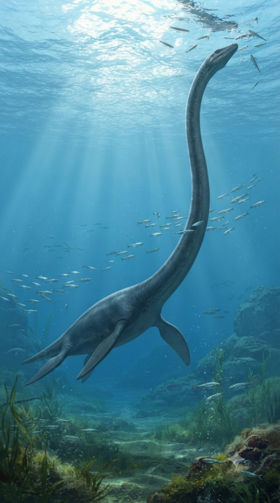
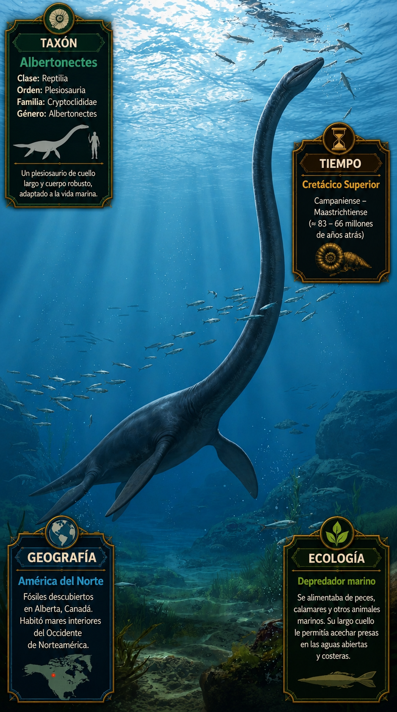
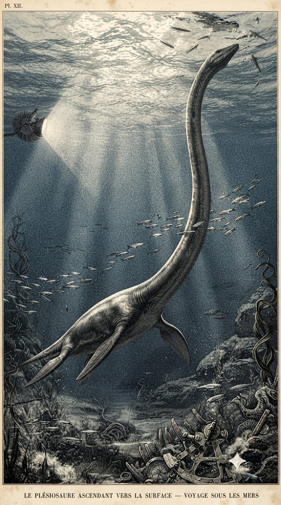
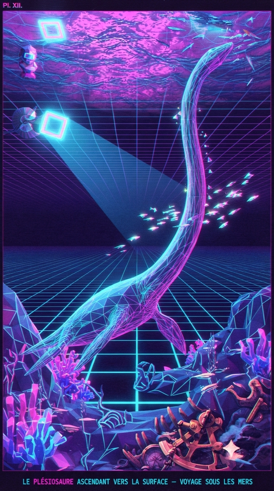

Paleoficha de PalEntropía




TAXÓN: Albertonectes vanderveldei
CLADO: Sauropterygia (Plesiosauria, Elasmosauridae)
DIETA: Carnívoro / Piscívoro-Teutófago (depredador marino especializado en la captura de peces óseos rápidos y cefalópodos mediante barrido rápido del cuello)
TAMAÑO: Longitud total estimada de 11.2 metros (de los cuales aproximadamente 7 metros corresponden exclusivamente al cuello); masa corporal aproximada de 3.5 a 5 toneladas
LOCOMOCIÓN: Natación acuática mediante propulsión de cuatro extremidades transformadas en aletas rígidas, utilizando un movimiento de sustentación hidrodinámica de tipo subacuático (similar al vuelo de los pingüinos o tortugas marinas)
TIEMPO: Cretácico Superior (Campaniense medio, aprox. 76 Ma)
GEOGRAFÍA: Norteamérica (Canadá, provincia de Alberta; Formación Bearpaw)
EQUIVALENCIA PALEOGEOGRÁFICA: Margen marino interior occidental (Vía Marítima Interior del Cretácico), aguas de plataforma continental y cuencas epicontinentales templadas-cálidas
AMBIENTE PALEOECOLÓGICO: Ecosistemas marinos abiertos de aguas someras a moderadamente profundas, caracterizados por una alta productividad biológica y sedimentación limolítica.
ECOLOGÍA:
- Flora: Fitoplancton marino y algas bentónicas en zonas fóticas costeras.
- Fauna secundaria: Comunidad de la biota de la Vía Marítima Interior, incluyendo ammonites, belemnites, peces teleósteos (Xiphactinus), tortugas marinas (Archelon), mosasaurios y otros plesiosaurios coexistentes.
- Nichos: Depredador nectónico de cumbre o estrato medio con el cuello más largo registrado en un vertebrado (compuesto por un récord de 76 vértebras cervicales). Su columna cervical hiperalargada poseía costillas cervicales superpuestas y una rigidez controlada biomecánicamente que reducía la turbulencia hidrodinámica al avanzar, permitiendo proyectar la cabeza para emboscar bancos de presas antes de que el cuerpo voluminoso fuera detectado.
- Relaciones: Elasmosauridae. Plesiosaurio derivado de gran tamaño adaptado hiperespecíficamente al alargamiento extremo del cuello como estrategia de alimentación por emboscada en columnas de agua pelágicas.
CLIMA: Wm22-Wm23 (Cretácico superior cálido con gradientes térmicos latitudinales moderados y circulación marina bien establecida).
ESTADO ECOLÓGICO: Extinto. Forma altamente especializada de los mares del Cretácico tardío, vulnerable a los cambios en la disponibilidad de presas pelágicas y a las fluctuaciones del nivel del mar previas al evento de extinción masiva del límite K-Pg.